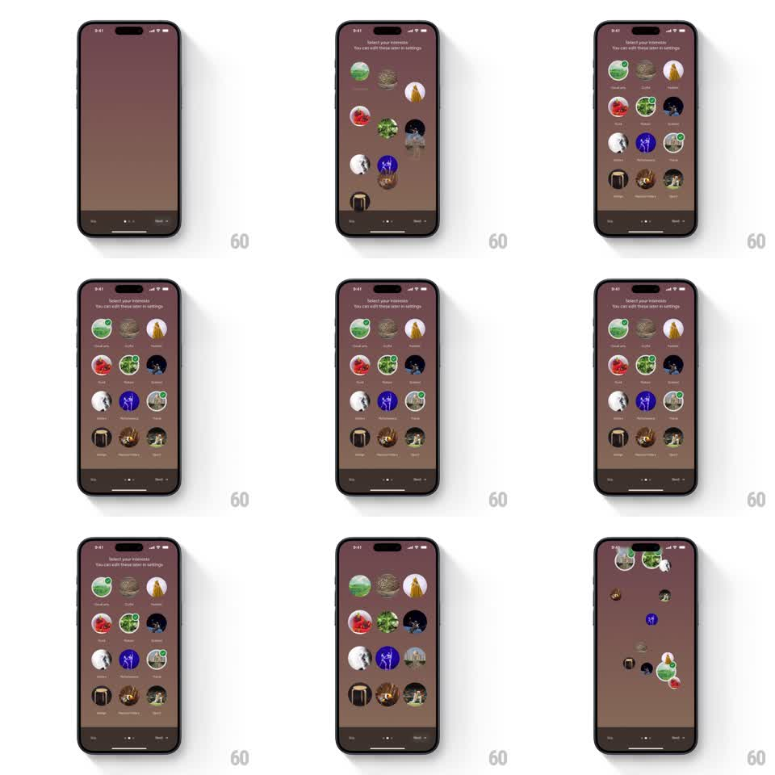

Media
Frame-by-frame

Rebuild this interaction 1:1: Google Arts & Culture's interest picker - circular category tiles drop from above and bounce into place one by one on the "Select your interests" screen, and when you proceed they all let go and fall off the bottom of the screen.

Rebuild this interaction 1:1: Google Arts & Culture's interest picker - circular category tiles drop from above and bounce into place one by one on the "Select your interests" screen, and when you proceed they all let go and fall off the bottom of the screen. ## Integration Integration: stack-agnostic spec - springs given as stiffness/damping, timed motions as duration + curve; map every value to your framework and animation library of choice. ## Scene Mauve-brown onboarding screen: "Select your interests" headline + subcopy top, a loose grid of ~12 circular photo tiles (Fine arts, Culture, Nature, Vehicles...), Skip / dots / Next controls at the bottom. ## Motion spec Pattern: gravity drop-in / drop-out, ~2s in, ~1s out. - Tiles enter one at a time (~90ms apart) from above the screen, accelerating under gravity, each landing on its slot with a small bounce (spring ~260/16, overshoot ~8px). - Tap toggles selection: a green check badge pops onto the tile (scale 0 -> 1, spring ~400/18) and the tile scales 1 -> 0.94 -> 1. - Next tap: every tile releases and falls straight down off-screen with per-tile gravity variance and slight rotation, staggered 40ms, no bounce at the edge. - Header and bottom controls stay fixed; the exit fall passes over them. ## Calibration - Entry bounces once; multiple bounces read as jelly, not weight. - Exit falls accelerate (ease-in) - a constant-speed exit looks like scrolling. ## Reduced motion Tiles fade in/out in place (250ms), ordered but not dropped. ## Don't miss - Drop-in order is fixed and fills the composition evenly (not strict row order) so the screen never looks lopsided mid-animation. - Selected state survives the exit - checked tiles fall with their badges on.